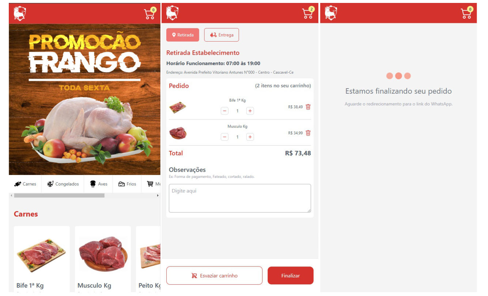

Cardápiodigital
online
Cardápio online desenvolvido com React e Tailwind, permitindo que o usuário selecione produtos, ajuste as quantidades, remova itens do carrinho e finalize o pedido. Ao concluir, o pedido é enviado diretamente para o WhatsApp da empresa, garantindo praticidade e agilidade no atendimento.
